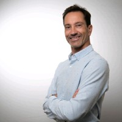

200 directivos de RRHH, una mañana en Barcelona y una conversación honesta sobre la era de la IA. Sin discurso vacío: cómo cambia el trabajo de quien recluta, lidera y desarrolla el talento, qué habilidades suben de valor, qué deja de tener sentido contratar y cómo se lidera todo esto sin perder a las personas por el camino. Y, ahora que la normativa europea de IA ya es aplicable, qué significa usarla bien en el departamento que maneja los datos más sensibles de la empresa.
La IA está cambiando lo que las empresas piden a sus equipos, cómo se mide la productividad y qué hace falta para liderar bien en este contexto. RRHH es de los primeros departamentos que tiene que responder, y muchas veces lo hace sin un mapa claro.
No queremos otro evento de inspiración genérica. Queremos una mañana en la que directivos de RRHH se reconozcan en las preocupaciones de los demás, salgan con ideas accionables y se vayan con un par de contactos útiles.
Por eso este formato: una ponencia con peso, una mesa redonda con voces de empresas que están dentro del cambio, una dinámica que activa la sala, un cierre breve y un brunch para alargar la conversación con quien te interese. Sin pitch, sin productos. Una mañana entera en el corazón del 22@ de Barcelona.
Perfiles que crecen y perfiles que se contraen. Habilidades humanas que suben de valor. Casos concretos, no titulares.
De gestor de procesos a consultor de talento. Lo que esto exige en criterio, herramientas y conversación con negocio.
Cómo no obsolecerse como profesional ni como organización. Qué están haciendo las empresas que mejor se están adaptando.
La regulación europea de la inteligencia artificial ha entrado en una nueva fase, con obligaciones que ya están en vigor sobre cómo las empresas usan IA. Para Recursos Humanos es especialmente delicado: es el departamento que maneja la información personal más sensible de candidatos y empleados (cribado, evaluación, desempeño). Por eso esta mesa junta las dos caras del problema: cómo adoptar IA en personas y cómo hacerlo dentro de la ley.
Usar IA en selección, evaluación o gestión de personas pasa a tener requisitos: transparencia, supervisión humana y trazabilidad de las decisiones.
La conversación ya no es solo si la IA funciona, sino si puedes demostrar que la usas de forma responsable y conforme a la normativa.
Joan abre la mañana e introduce a Iolanda Triviño, que arranca con una ponencia sobre el futuro del trabajo y del talento: qué habilidades suben de valor, qué deja de tener sentido y por qué adoptar IA empieza en las personas, no en la tecnología.
Foresight strategist y talent designer. Fundadora del Institute for Futures (IFF), co-founder de la Global Future of Work Foundation y presidenta de la Comisión de Talento de 22@Network Barcelona. Más de 25 años investigando cómo cambia el trabajo y formando a líderes, también en London Business School.
LinkedInSu nuevo libro, coescrito con Simon L. Dolan y Mario Raich, sobre cómo liderar cuando cambian las reglas del trabajo: las habilidades que más suben de valor son humanas, y las organizaciones que combinan madurez emocional con IA son las que lideran la transformación.
Tras la ponencia, todos se sientan a la misma mesa. Líderes de People & Culture que ya están metiendo IA en sus organizaciones y una abogada de referencia en IA y protección de datos. Adopción, liderazgo y cumplimiento, en la misma conversación, moderada por Karim Barmose.
Foresight strategist y fundadora del Institute for Futures. Tras su ponencia se suma a la mesa con la mirada de hacia dónde va el trabajo y las habilidades que vienen.
LinkedInChief People & Culture Officer en Cooltra, donde ha construido la función de People desde cero. Ex jugadora profesional de voleibol y psicóloga de formación. Profesora en Nuclio Digital School y en la Universitat de Barcelona y mentora en GEMA. Certificada en IA for People Leaders y experta en transformación digital de RRHH: trae la cara práctica de meter IA en el día a día del equipo.
LinkedInChief People & Culture Officer en Techsoulogy (antes Tappx) y una de las voces de RRHH más seguidas en LinkedIn (+42.000 seguidores). Coach certificada (AICM), speaker y coautora del libro 100 Preguntas y Respuestas sobre la Gestión de Personas. Profesora del Máster de Dirección de RRHH de la UB y referente en seguridad psicológica y liderazgo humanista. Reconocida como Líder más inspirador en RRHH (Awards of Happiness 2025).
LinkedInSocia de Protección de Datos, Ciberseguridad y Nuevas Tecnologías en RocaJunyent y Lawyer of the Year - Privacy (Iberian Lawyer). DPO certificada y auditora ISO 27001. Ponente sobre gobernanza de IA y la normativa europea de IA: aporta a la mesa la lectura jurídica de usar IA con datos de personas sin saltarse la ley.
LinkedIn
Co-founder y CEO de KPI, consultora de liderazgo, y coach en Excelencia Emocional. +20 años dirigiendo equipos en multinacionales. En la mesa aporta el lado humano del liderazgo; más tarde activa la sala con una dinámica sobre conversaciones difíciles y qué no puede hacer la IA.
LinkedInNetworking, ponencia, mesa redonda, dinámica y cierre. Dos horas y media en las que pasa algo cada bloque y nadie se queda mirando un PowerPoint.
Llegada. Conversaciones de pasillo entre directivos de RRHH de Barcelona y alrededores. Sin badges absurdos ni dinámicas forzadas.
Joan abre la mañana, marca el tono y presenta a Iolanda Triviño. Cinco minutos para elevar la conversación: honestidad, no humo.
Por Joan Boluda · Actual TalentHabilidades humanas que suben de valor, perfiles que crecen y se contraen, y por qué adoptar IA empieza en las personas. Las ideas de su libro Rompiendo el juego, llevadas a la sala.
Por Iolanda Triviño · Institute for Futures (IFF)Todos en la mesa. Líderes de People & Culture que ya están metiendo IA en sus organizaciones, la mirada legal y la visión de mercado. Contratación, productividad, adopción interna y qué exige hacerlo bien ahora que la normativa europea de IA ya es aplicable.
Con Iolanda Triviño, Patricia Iglesias, Rossana Montemurro, Xavi Sáez y Beatriz Rodríguez. Modera Karim BarmosePor grupos: conversaciones difíciles, dilemas éticos, qué no puede hacer la IA. Ligera, participativa, accionable. No coaching intenso, sí material para reflexionar al volver al despacho.
Por Xavi Sáez · KPI · Key People ImprovingCierre breve con tres ideas que vemos cada semana en Actual Talent: cómo se adaptan mejor las empresas más rápidas, por qué el recruiter del futuro es más consultor que administrativo, y por qué la edad pesa menos cuando entra la IA.
Por Joan Boluda · Actual TalentInvitación a unirse a la comunidad de profesionales de RRHH con la que estamos creando espacios para hablar de todo esto entre quienes lo están viviendo en primera línea.
Brunch para cerrar la mañana en mesa, sin agenda fija. Tiempo para retomar conversaciones de pasillo, contrastar ideas y poner nombre a las preocupaciones que han salido en la sala.
El evento se celebra en Aticco Diagrame, el coworking más grande de España y del sur de Europa: 20.000 m² en el corazón del distrito tecnológico de Barcelona, certificación LEED Platinum y espacios diseñados para eventos profesionales.
Carrer de Pere IV, 105-109. Bien conectado, terrazas amplias y una atmósfera que conecta con el tipo de conversación que queremos tener: empresas que están construyendo el trabajo del futuro, ya hoy.
Ver el espacio en aticco.comMiércoles 17 junio 2026 · 09:00 a 13:30h · Brunch al cierre · Aticco Diagrame · Pere IV 105-109, Barcelona
Reservar plazaEl registro se gestiona en Luma. Confirmación inmediata.
¿No puedes venir el 17 o quieres seguir la conversación entre evento y evento? Estamos construyendo una comunidad de profesionales de RRHH con la que pensamos en alto sobre todo esto.
Unirme a la comunidad WhatsApp